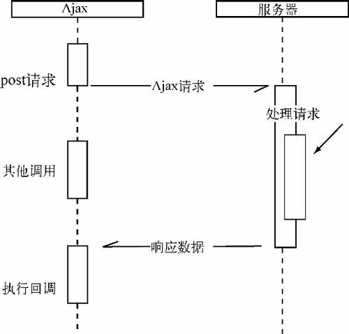
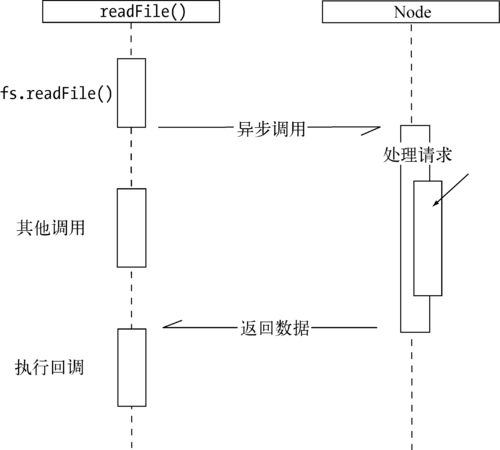
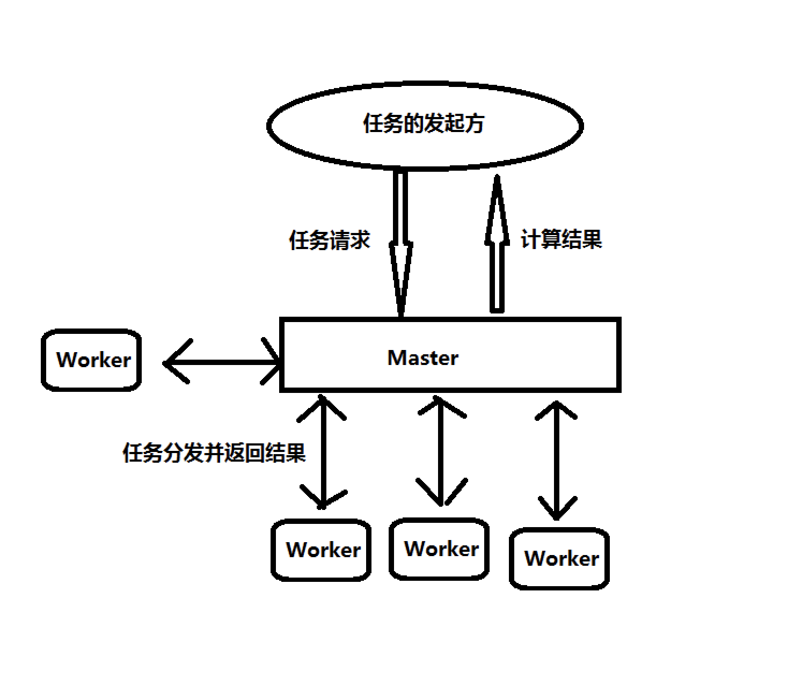

Node已经是一门非常成熟而且非常火热的技术了，作为一个前端菜鸟，我觉得有必要把读书笔记写出来。我见过有些人学一门技术，从一开始就只专注于技术本身，不去了解该技术产生的历史背景和契机，个人感觉这样并不是很妥，所以就先从Node的历史来学起，加油！
第1章 Node简介
1.1 Node的诞生历程
2009年3月，Rya
n Dahl（赖恩·代赫勒）宣布要创建一个基于V8的轻量级的Web服务器饼提供了一套库。
2009年5月，作者已经在GitHub上放出了最初的版本。（老外的效率就是高……🤔）
2009年和2010年，连续两届JSConf大会都安排了Node的讲座。
接下来从2010年年底开始，Node就迎来了它的“黄金时期”，在GitHub上坐上了“万年老二”的位置，2011年发布了支持windows系统的Node版本。
1.2 Node的命名与起源
1.2.1 为什么是JavaScript
为什么作者偏偏选中了JavaScript呢？通俗的来讲，就是作者遇到挫折了，他想要的高性能web服务器需要满足两个要点：事件驱动以及非阻塞I/O，纵观当时的开发语言，符合这两点的只有JavaScript，所以作者就选了JavaScript作为Node的实现语言。（老外还真就是喜欢折腾，不过我喜欢😍）
1.2.2 为什么叫Node
至于Node的命名也是五花八门，但是都离不开Node和js，因为Node就是基于浏览器的V8引擎实现对脚本的处理的，所以叫Nodejs，Node.js等等这类名字完全和它的作用和起源相符，但是最后的正式称谓还是Node。
作者在最初的时候，并没有想用这个名字，而是用了web.js给他的项目命名，但是后来发现，项目的发展超过了他当时只想开发一个web服务器的想法，反而变成了构建网络应用的一个基础框框，那咋办，那就把目标调高一点，干脆做一个构建快速、可伸缩的网络应用平台吧，这个平台通过通信协议来组织许多Node，然后就像连点成线、连线成面一样，通过扩展来达成构建大型网络应用，不得不说，真NB。每一个Node进程都是这个网络应用中的一个节点，so，就干脆叫这名儿吧，朴实无华还贴切。
1.3 Node给JavaScript带来的意义
如果说V8给Chrome浏览器带来的是一颗强大的心脏，那么Node对于JavaScript的意义就是把其从Chrome浏览器中解放出来，给了JavaScript更大的舞台。众所周知的是，Chrome浏览器拥有两个引擎，一个呢就是我们熟知的JavaScript引擎（V8），还有一个就是WebKit布局引擎，WebKit用来处理布局样式，而V8则用来处理脚本，在实现上，浏览器提供了越来越多的功能暴露给JavaScript和HTML标签，但是就前端浏览器的发展现状而言，HTML5标准统一的过程是相对缓慢的，就好比一个智商180的天才和一个智商100的普通人在同一所学校读书，普通人还在读三年级，但是天才已经读完了高三，这样天才肯定得去读大学了，不然就会限制他的发展，用俗话说就是“我们这小庙容不下您这大佛”，所以Node的作者就把Chrome的V8独立出来，然后基于V8写出了Node，他给了Node更多的扩展，就像给JavaScript插上翅膀一样，可以让它放飞自我。
Node和Chrome的结构十分相似，他们都是基于事件驱动和异步架构，浏览器通过事件驱动来服务页面上的交互，Node通过事件驱动来服务I/O。
在Node中，JavaScript可以更加随心所欲的干着访问本地服务器、连接数据库、搭建web服务器等等，终于不再局限与和CSS以及DOM树打交道。如果说HTTP协议栈是水平面，那么Node就是浏览器在协议另一边的倒影。Node不用处理UI，但用与浏览器相同的机制和原理运行。正是因为Node打破了JavaScript只能在浏览器中运行的局面，所以才使得前后端开发环境可以统一，大大降低了前后端转换需要的上下文交换代价。
近几年随着前端工程师的兴起，Node也随之大放异彩。甚至目前在社区上已经出现了node-webkit这样的项目，顾名思义，在这样的项目中，将Node中的事件循环和WebKit中的事件循环融合在一起，说白了就是，既可以享受HTML、CSS带来的UI构建，也能通过它访问本地资源，将两者的优势更好地融合在了一起。到目前为止，桌面应用程序（Desktop Application）的开发可以完全通过HTML、CSS、JavaScript来完成。（结尾还是得扣666…😂）
1.4 Node的特点
1.4.1 异步I/O
说到异步，前端工程师首先肯定会想到Ajax（[ˈeɪdʒæks]），没错，Ajax就是一个异步的一个典型，比如：
$.post("/url",{title : '小白的Node之路'},function (data) {
console.log("收到响应")
});
console.log("发送Ajax结束")如上述代码，熟悉异步的朋友一定知道，“收到响应”是在“发送Ajax结束”之后输出的，因为在调用$.post()后，后续的代码是立即执行的，而“收到响应”的时间是不固定的，我们只知道“收到响应”是在“发送Ajax结束”之后执行，但是并不知道“收到响应”的具体时间，这和异步调用中对于结果的捕获规则是相符的，具体是什么规则呢，简言之就是，你女朋友在忙的时候会告诉你，我忙完了会联系你，你不用给我打电话，这就是规则。（(⊙o⊙)…女人应该就是这样子的😂）
再附上一张经典的Ajax调用图以供大家参考：

在Node中，异步I/O也是随处可见的，就拿简单的读取文件为例，它和Ajax的调用方式是极其类似的：
var fs = require('fs');
fs.readFile("/path",function(err, file) {
console.log("读取文件完成")
});
console.log("发起读取文件");同样，在上述代码中的“读取文件完成”是在“发起读取文件”之后输出的，“读取文件完成”也取决于读取文件的异步调用何时结束。
结尾再附上一张经典的异步调用图：

在Node中，绝大部分操作都是以异步的方式进行的，因为这样的话每个调用都无需等待之前的I/O调用结束，这样可以在编程模型上极大的提升效率，比如下面的代码：
var fs = require('fs');
fs.readFile("/path1",function(err, file) {
console.log("读取文件1完成")
});
fs.readFile("/path2",function(err, file) {
console.log("读取文件2完成")
});在上述代码中，两个文件读取任务的耗时取决于最慢的那个文件读取的耗时，而对于同步I/O而言，它们的耗时是两个任务的耗时之和，所以在这里能很明显地感受到异步带来的优势，确实是提高了效率。
1.4.2 事件与回调函数
随着Web2.0时代的到来，JavaScript在前端中已经成了主宰一般的存在，随之而来的事件也得到了广泛的应用。
事件的编程方式具有轻量级、松耦合、只关注事务点等优势，但是在多个异步任务的场景下，事件与事件之间项目独立，如何协作就成了一个老大难问题。
先看下面的代码，第一段代码是Node创建一个Web服务器，并监听8080端口：
var http = require("http");
var queryString = require("queryString");
// 侦听服务器的request事件
http.createServer(function (req, res) {
var postData = "";
req.setEncoding('utf8');
// 侦听请求的data事件
req.on("data",function (chunk) {
postData += chunk;
})
// 侦听请求的end事件
req.on("end",function () {
res.end(postData)
})
}).listen(8080);
console.log("服务器启动完成");第二段代码是为Ajax绑定了success事件，只关心请求成功时的业务逻辑：
$.ajax({
'url': "/url",
'method': "POOST",
'data': { },
'success':function (data) {
// success事件
}
})从上边的代码可以看出，回调函数是无处不在的。这是因为在JavaScript中，回调函数是一等公民，可以将函数作为对象传递给方法作为实参进行调用。不过回调函数使得很多习惯了同步思路的开发人员很头疼，使用起来也不是那么顺手，因为在他们的思想里程序一定是自上而下执行的，但是回调函数的出现使得代码的编写顺序与执行顺序没有了关系，所以WTF😒。
1.4.3 单线程
Node保持了JavaScript在浏览器中单线程的特点，而且在Node中，JavaScript与其余线程是无法共享任何状态的。
单线程最大的好处就是不用像多线程编程那样时时刻刻要在意状态同步的问题，没有锁死的存在，也没有上下文交换所带来的性能上的开销。而单线程的缺点主要有以下三方面：
- 无法利用多核CPU
- 错误会引起整个应用退出，应用的健壮性值得考验（说白了就是断了一条腿就把命丢了🤔）
- 大量计算占用CPU导致无法继续调用异步I/O（CPU：我TM在忙，等会儿……😒）
在浏览器中，JavaScript与UI是公用一个线程的，如果JavaScript长时间执行会导致UI的渲染和响应被中断。在Node中也是一样的，长时间的CPU占用会导致后续的异步I/O发不出调用，已完成的异步I/O的回调函数也会得不到及时执行。为了解决这个问题，Google研发了Gears，它会启用一个独立的进程去执行需要计算的程序，然后把结果通过事件的方式传回，这样很大程度上降低了阻塞的几率。后来，HTML5发明了Web Workers，逃不过的真香定律，Google放弃Gears来支持Web Workers。再后来，Node也使用了和Web Workers相同的思路来解决这个问题，这就是child_process（子进程）。
子进程的出现，使得Node可以从容的应对单线程在健壮性和无法利用多核CPU方面的问题。
Node在进程管理方面采用的就是Master-Worker的管理方式，Master-Worker模式的核心思想是在于Master进程和Worker进程各自分担各自的任务,协同完成信息处理的模式，如下图就很清楚地说明了该管理方式：
1.4.4 跨平台
在Node发明之处，只能运行在Linux系统中（这不坑爹么😒），但是随着Node的发展，微软爸爸感觉这家伙越来越强大，就干脆找了一帮人实现了Node对Windows的兼容（666😂），微软发明的这玩意儿叫libuv，至于这玩意儿是啥，后期会讲到（呃，是学到😅），现在只要记住它是操作系统与Node上层模块系统之家构建的一层平台层架构就可以了，不过libuv也属实NB，现在已经成为了许多系统实现跨平台的基础组件了。（这就不能用666来形容了，应该是999，6翻了……😂）1.5 Node的应用场景
1.5.1 I/O密集型（I/O bound）
I/O密集型指的是系统的CPU性能相对硬盘、内存要好很多，此时，系统运作，大部分的状况是CPU在等I/O (硬盘/内存) 的读/写操作，此时CPU Loading并不高。
从单线程的角度来说，Node处理I/O的能力是一流的。Node面向网络且擅长并行I/O，能够有效地组织起更多的硬件资源，从而提供更好的服务。I/O密集的优势主要在于Node利用事件循环的处理能力，而不是启动每一个线程为每一个请求服务，资源占用较少。1.5.2 是否不擅长CPU密集型业务
Node虽然在I/O密集型场景中大放异彩，但是在CPU密集型中也能胜任，这得益于V8的深度性能优化。
先说说什么是CPU密集型（CPU-bound）？
- CPU密集型也叫计算密集型，指的是
系统的硬盘、内存性能相对CPU要好很多，此时，系统运作大部分的状况是CPU Loading 100%，CPU要读/写I/O(硬盘/内存)，I/O在很短的时间就可以完成，而CPU还有许多运算要处理，CPU Loading很高。 - 在多重程序系统中，大部份时间用来做计算、逻辑判断等CPU动作的程序称之CPU bound。例如一个计算圆周率至小数点一千位以下的程序，在执行的过程当中绝大部份时间用在三角函数和开根号的计算，便是属于CPU bound的程序。
- CPU bound的程序一般而言CPU占用率相当高。这可能是因为任务本身不太需要访问I/O设备，也可能是因为程序是多线程实现因此屏蔽掉了等待I/O的时间。
CPU密集型应用给Node带来的挑战主要是：由于JavaScript单线程的原因，如果有长时间运行的计算（比如大循环），将会导致CPU时间片不能释放，使得后续I/O无法发起。
Node应对上述挑战的方法是：适当调整和分解大型运算任务为多个小任务，使得运算能够适时释放，不阻塞调用的发起，这样既可同时享受到并行异步I/O的好处，又能充分利用CPU。所以说，CPU密集不可怕，如何合理调度是诀窍。
1.5.3 与遗留系统和平共处
Node还有一个好处就是，在一些老旧的项目中，比如JSP/ASP，前后端不分离，这样对一些没有Java开发经验的前端工程师来讲是一件比较头疼的事，但Node的出现，既使得前端工程师在HTTP协议栈的两端能够高效灵活的开发，避免了Java繁琐的表达，又可以利用Java作为后端接口和中间件，使其具有良好的稳定性，两者可以相互结合，取长补短。
1.5.4 分布式应用
说到分布式应用，百度百科给出的释义是：分布式应用（distributed application）指的是应用程序分布在不同计算机上，通过网络来共同完成一项任务的工作方式。
分布式应用的典型案例莫过于阿里巴巴的数据平台。众所周知，阿里的数据量是非常巨大的，所有存储数据的一定是用数据库集群来存储的，这样对于查询数据也是一个考验，因此，阿里团队研发除了中间层应用（NodeFox、ITier），简单来说就是，查询调用依旧是针对单张表进行SQL查询，中间层分解查询SQL，然后并行地去多台数据库中获取数据然后合并。
举个简单的例子，就好比你急着结婚，但是没对象，没办法只能相亲，然后你把你的要求告诉了身边的亲戚朋友甚至是媒人（这就是中间层），让他们根据你提的条件去找合适的相亲对象，找到以后反馈给你。（相亲是一条不归路，且相且珍惜😑……）
1.6 Node的使用者
就目前Node对于前端工程师的意义来说，一些中小企业的前端工程师是用Node来做中间层和一些工具的开发，能真正使用Node来做开发的公司是较少的，就拿本人来讲，学Node仅仅是为了在面试的时候多一个加分项，虽然肤浅，但是快乐😅。